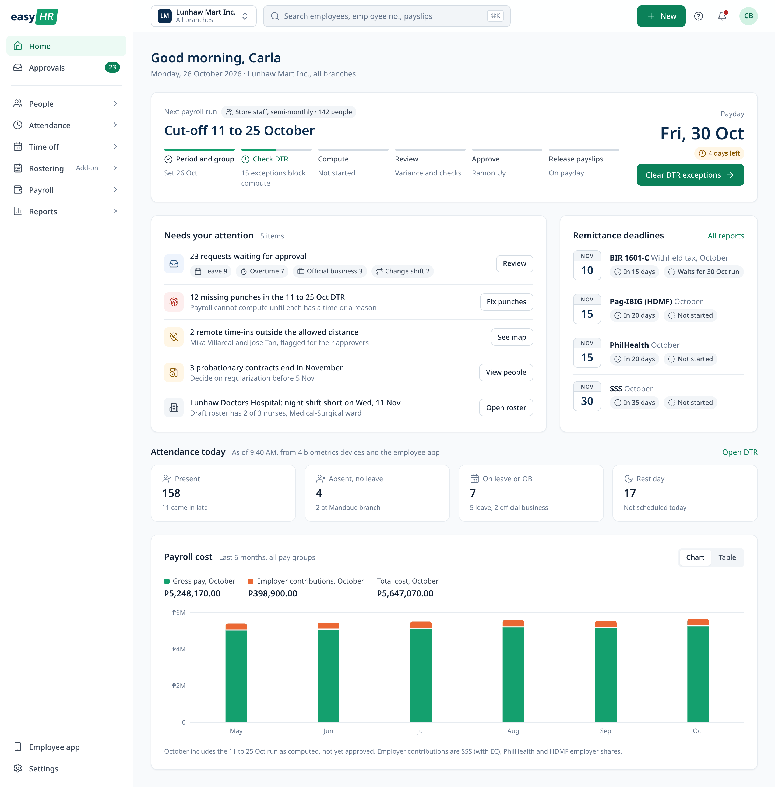
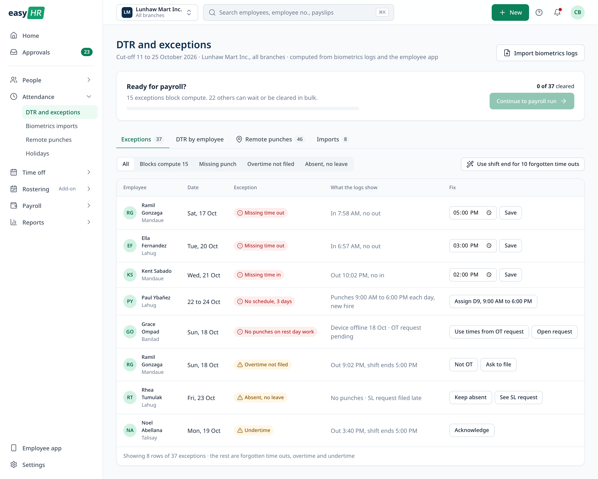
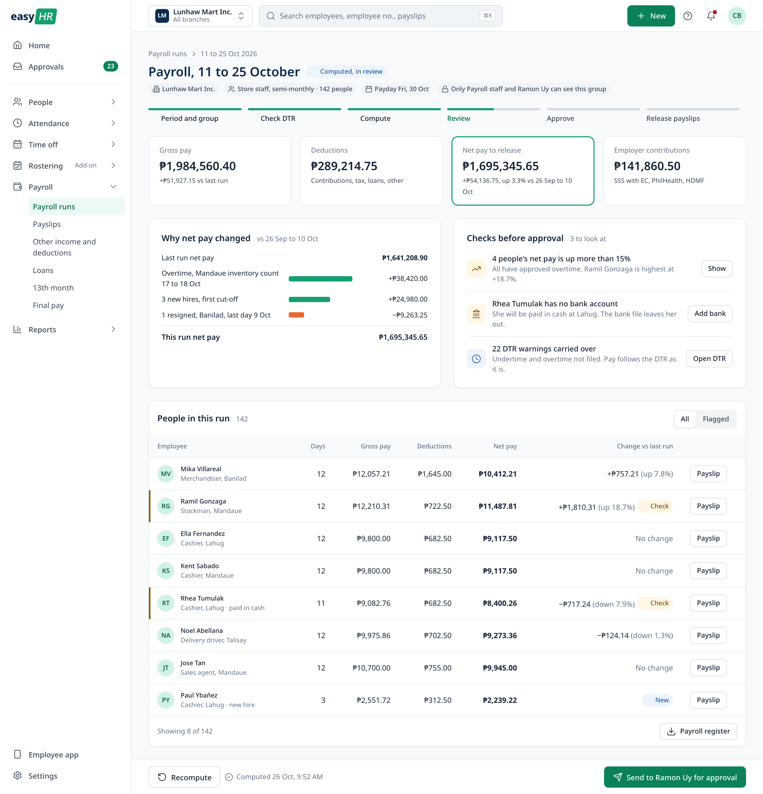
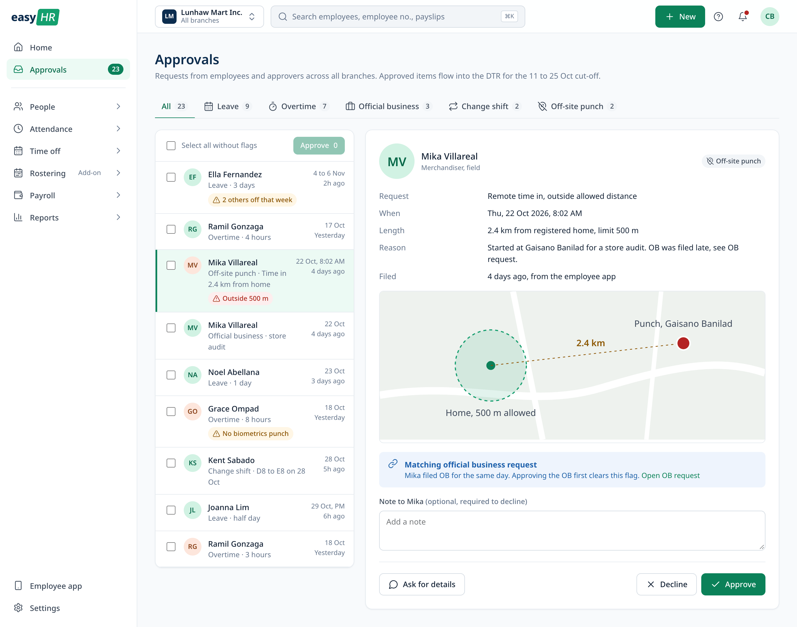
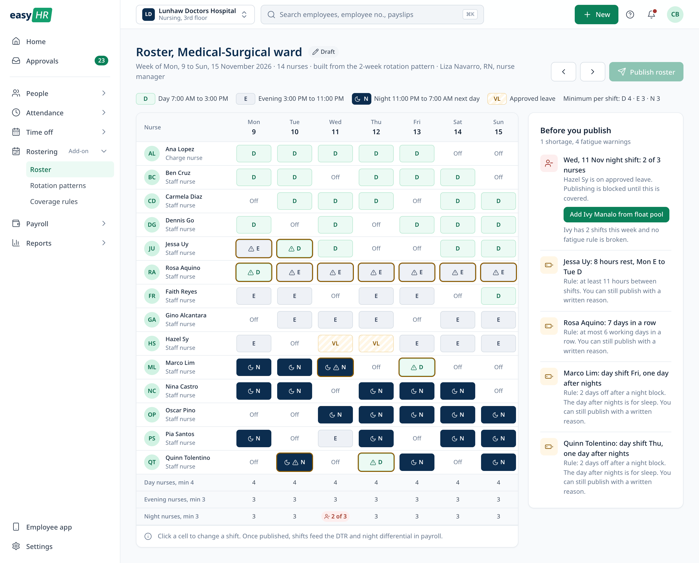
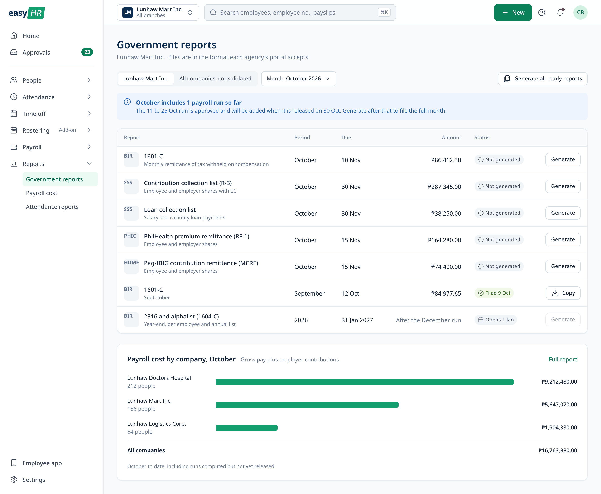
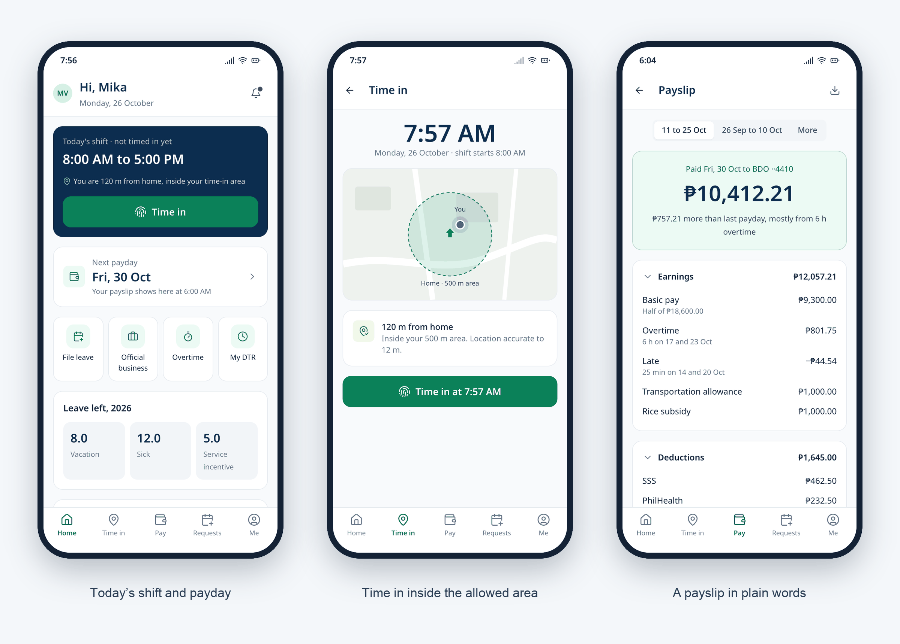

easyHR, payroll and HR for small businesses
easyHR is a payroll and HR app for small businesses in the Philippines, including groups of companies and teams that work around the clock. It is the second app in the Easy series, after easyFS, and a concept I designed on the same system in green. This page walks through it: who it is for, how they use it, and the main screens.

- Project
- easyHR
- Series
- Easy series, with easyFS
- Platform
- Web, and a phone app for employees
- Role
- UI/UX design, concept
Overview
Pay that people count on.
easyHR covers employee records, attendance, approvals, payroll, government reports, rostering and an employee app. HR and payroll officers run it day to day. Supervisors approve requests and build rosters. Employees use it on their phones to time in, file requests and read their payslips. An owner or finance head approves the final payroll.
I built it on the easyFS system: the same shell, components and patterns, with blue swapped for green, so the two apps read as one family. Payroll is a place where a mistake costs someone their pay, so I tried to show what is blocking pay before it goes wrong, and to keep the exact terms (DTR, 201 file, SSS, PhilHealth, HDMF, BIR 1601-C) where payroll staff expect them. The companies, people and amounts shown here are made up.
User journeys
Three people, three cut-offs.
A typical task for each kind of user, step by step. The line follows how each step feels, where it dips and where it recovers. The feelings are my assumptions and still need testing with real users.
-
Carla, HR and payroll officer
Runs six payrolls a month for three companies. Wants everyone paid right and on time, without a weekend of spreadsheet checks.
- 01
Sees what is due
Home says payday is in 4 days and 15 exceptions block compute.
Oriented - 02
Imports biometrics
Drops the files from four branches. One she already loaded is skipped.
Wary then safe - 03
Clears DTR exceptions
Fills 10 forgotten time outs with the shift end in one click.
Tedious then quick - 04
Computes and reviews
Reads why net pay is up 3.3% and checks the two flagged people.
Worried then sure - 05
Approves and releases
Ramon, the finance head, approves on his phone. Payslips go out at 6:00 AM on payday.
Relieved
- 01
-
Mika, merchandiser
Visits malls all week with only her phone, and often starts the day at a store. Wants her time and overtime counted without chasing HR.
- 01
Times in from home
Sees she is 120 m from home, inside her area, and taps Time in.
Quick - 02
Times in from a store
She is 2.4 km away. The app saves her location and asks for a reason.
Anxious then reassured - 03
Files official business
Adds tomorrow’s two malls, so those time ins are not flagged.
Ahead - 04
Files leave
Picks two dates and sees 6.0 days left before sending.
Sure - 05
Opens the payslip
Net pay is up ₱757.21, and the payslip says it is the overtime.
Trusting
- 01
-
Liza, nurse manager
Rosters 14 nurses across day, evening and night shifts every week. Wants every shift covered without wearing out the same nurses.
- 01
Starts from the rotation
The draft is already filled from the rotation, with approved leave in place.
Head start - 02
Spots the gap
Wednesday night has 2 of 3 nurses. Publish is off until it is covered.
Alarmed - 03
Covers the night
Adds a float nurse who has room and breaks no rule.
Solved - 04
Weighs fatigue
Reads four warnings, including a nurse on 7 days in a row who asked for the shifts.
Torn - 05
Publishes with a reason
Writes why, and 15 nurses are notified. Shifts flow to the DTR.
Covered
- 01
Home
Where the payroll stands.
Home leads with the next payroll run: the cut-off, payday, days left and the step it is on, with one button for the next action. Below it are the things that need attention, the remittance deadlines and who is in today.

Attendance
Fix the DTR before payroll.
The DTR is computed from biometrics files and the employee app. Exceptions are split into the ones that block compute, like a missing time out, and the ones that can wait. Common fixes work in bulk and can be undone, and every HR edit is marked on the DTR.

Payroll
Review before anyone is paid.
After compute, the review shows the totals, why net pay changed since the last run, and the people worth a second look. Sending for approval and recalling are easy. Releasing payslips asks first, because it cannot be undone.

Approvals
One queue for every request.
Leave, overtime, official business, shift changes and off-site time ins come into one queue, and clean items can be approved together. An off-site time in shows the distance on a map and any matching official business request. Declining needs a note, so the employee knows why.

Rostering
Shifts covered, rest kept.
For teams that work around the clock, a roster starts from a rotation pattern with approved leave already in place. The rows under the grid count nurses per shift against the minimum. A shortage blocks publishing. Fatigue rules only warn, and publishing with a warning asks for a written reason.

Reports
Government reports in one list.
BIR, SSS, PhilHealth and Pag-IBIG reports for the month sit in one list with their due dates and amounts, for one company or the whole group. Payroll cost by company sits below.

Phone
The employee app.
Employees use easyHR on their phones to time in, check their shift and leave, file requests and read payslips. Time in shows the distance from home and the allowed area before the button. The payslip leads with net pay and says why it changed.

Let’s talk
I’d love to tell you more on a call.
There’s more to this project than fits on one page. If you’re interested, I’m happy to walk you through it.